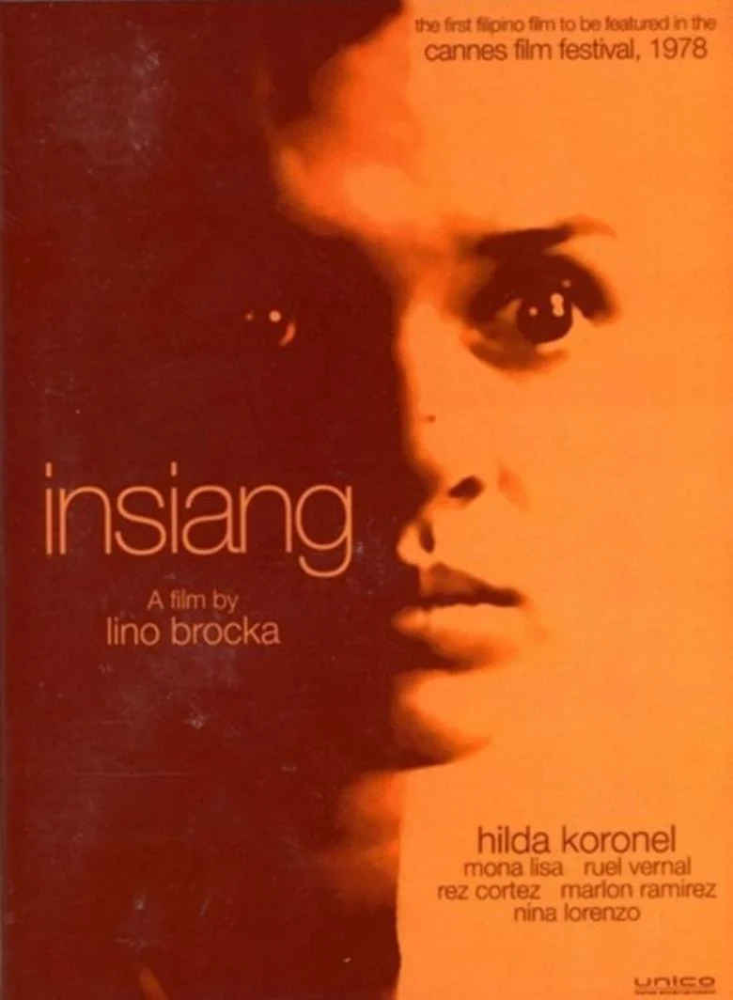

Insiang (1976)
You should watch *Insiang* because it is a classic Filipino movie with a strong and emotional story. It shows the struggles of a young woman dealing with family problems, poverty, betrayal, and difficult situations. The movie is also interesting because of its realistic characters and powerful story, which can make you think about the problems faced by people in society. It is a good movie to watch if you want something meaningful and different from typical movies.
Jaguar (1979)
You should watch Jaguar because it is a powerful Filipino movie about a young man who becomes involved in the world of crime and power. The movie shows how poverty, ambition, and the desire for a better life can affect a person's choices. It also gives a realistic look at social inequality and how people with power can influence others. If you enjoy serious stories with crime, drama, and meaningful lessons, Jaguar is a great movie to watch.